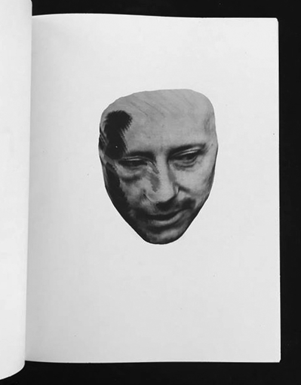
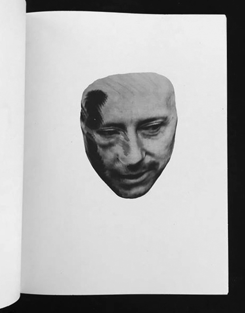

After a social research about Asolo, a village in the Veneto region of Northern Italy, my team and I have designed an installation which represents the “ideological” monument of the town. Asolo is a place with more tourists than inhabitants. Our project tries to express the condition of a village without a clear identity. The team was composed by Vittorio Veronesi, Giulio Galli, Marta Fioravanti and Mattia Angelini.
 
